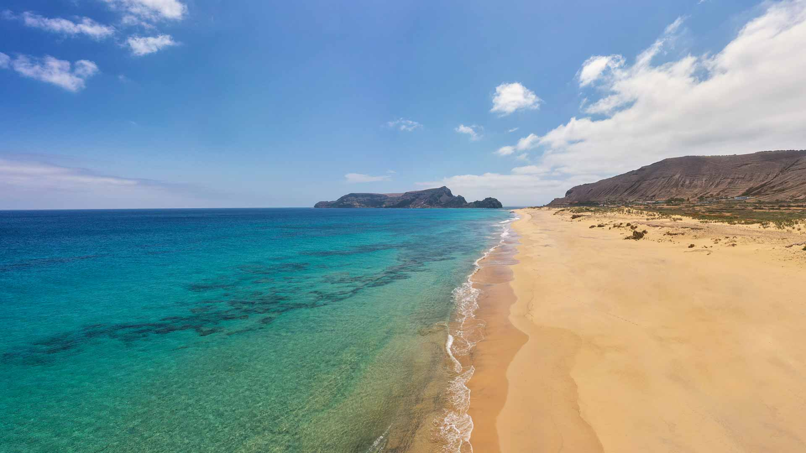

🏖️
Praia do Porto Santo
A grande estrela da ilha: 9 km de areia dourada, águas calmas e propriedades terapêuticas da areia. É uma das praias mais famosas de Portugal e o principal motivo de visita à ilha.